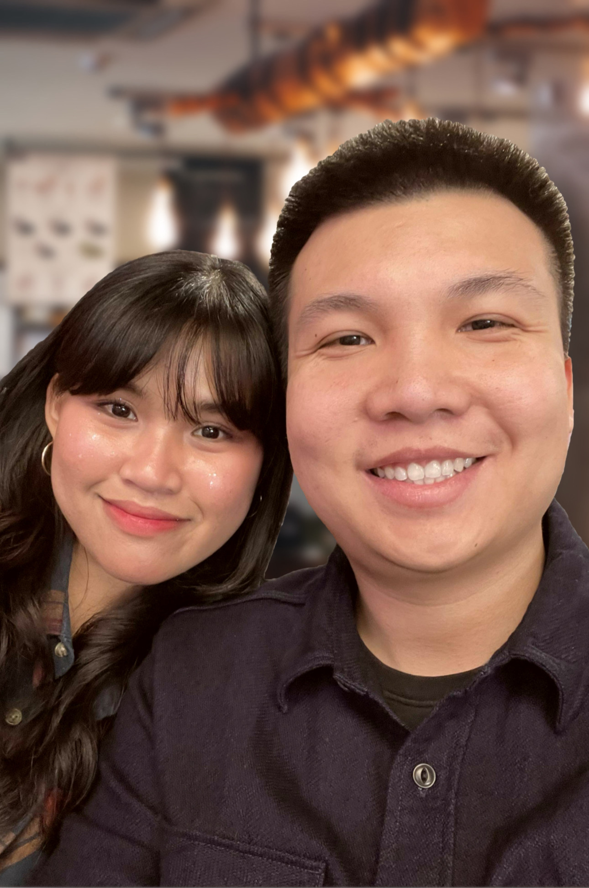

About Us
-
What is Lata?
Lata (pronounced as luh-tah) is a Spanish/Tagalog word that translates to "tin can". Lata can be used to store and contain an assortment of things, such as household items, goodies, and gifts. Now, imagine that you open a tin can and see a glimpse of something that appears to be wonderful. You take a scoop and reveal all the different layers and textures you did not expect. You take a bite, and you're forever changed.
-
Why Lata Cakes?
Lata Cakes is different from any other cakes you've tried. Aside from our unique concept, we only use the finest organic ingredients available on the market for each of our cakes. While our cakes might look sinful, they are surprisingly not very sweet. On top of that, the sugar level of our cakes can be modified upon request. We are all for sustainability and our food-grade tin cans are reusable, too! How awesome is that?
-
Unique cakes with unique flavors
Our gourmet cakes are available in a variety of carefully curated and chosen flavors. We provide traditional flavors that everyone knows and loves, as well as flavors that are closer to our Asian roots. We also take advantage of fruits and ingredients that are in season and we turn them into captivating flavors to provide our customers the best experience. Enjoy!
-
We want to share the magic
Our mission is to share the magical experience we had when we took the first bite of Lata Cakes. And it still gets us every time! We want everybody to experience our delightful concoction with the finest ingredients at affordable prices, so they can be enjoyed on any occasion, or no occasion (We don't judge).
The Couple Behind the Magic

Meet the culinary duo, Patricia Dimaano and Quyen Nguyen, whose passion for food and love for each other
come together to bring delightful
confectionary creations. With a shared commitment to crafting memorable dishes and desserts, this dynamic
couple aims to bring unique flavors and
creativity to the kitchen.
Patricia, a Filipino immigrant, loves baking at an early age. Her culinary journey began when she started
assisting her auntie bake an assortment
of desserts to sell at their bakery located in the bustling streets of Manila. From there, she developed a
deep appreciation for baking and got
inspired to start a business of her own. During special occassions and family gatherings, Patricia loves to
bake for her loved ones. Her creations
pay tribute to her family and her childhood.
Quyen, on the other hand, emigrated from Vietnam. Having lived in a country known for its rich culinary
culture, he got exposed to unique, exotic
dishes and flavors at a very young age. Contrary to Patricia's love for baking, Quyen is a maestro of savory
delights. He loves to cook and draws
inspiration from his mother, from whom he learned his meticulous preparation and cooking techniques.
Together, Patricia and Quyen form a harmonious culinary balance based on the mixture of their own
backgrounds and upbringing. Their creations are
not merely confections; they are edible stories about their Asian roots and their journey as a couple.